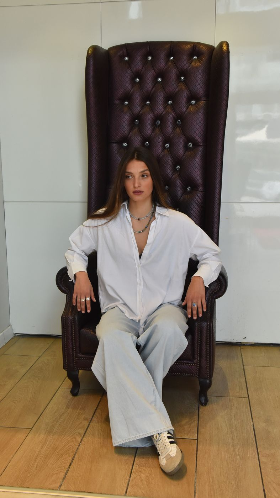

אחדות בעם ישראל
אחדות היא לא אחידות – לחיות ולעבוד יחד בלי להיות דומים.
מתוך הסיפור: הגיוס · קצינה לוחמת
מתאים במיוחד ל:
חברות ו-HRמשרד החינוך, בתי ספר ויועציםרשויות ומשרדי ממשלההרצאה · ארבעה נושאים · ארבעה קהלים
מביתר עילית, דרך פנימיות וקצונה קרבית, ועד יזמות חברתית ופרויקטים לנערות בסיכון.
להזמנת ההרצאה
בגיל 11 יצאתי מהבית. הייתי נערה בסיכון – ובחרתי להיות נערה בסיכוי. קצינה לוחמת, פצועה שבחרה בצדק מאחה, יזמית שהפכה עסק למיזם חברתי. היום אני מביאה את הדרך הזאת לבמה – ולשטח.
הנושאים
אחדות היא לא אחידות – לחיות ולעבוד יחד בלי להיות דומים.
מתוך הסיפור: הגיוס · קצינה לוחמת
מתאים במיוחד ל:
חברות ו-HRמשרד החינוך, בתי ספר ויועציםרשויות ומשרדי ממשלהמה באמת משנה מסלול לנער או לנערה בקצה – ומה התפקיד של כל אחד מאיתנו.
מתוך הסיפור: ביתר עילית · גיל 11 · נערה בסיכוי · הגיוס · ONE SHOT · מנטורינג ו״בוראות מציאות״
מתאים במיוחד ל:
משרד החינוך, בתי ספר ויועציםרשויות ומשרדי ממשלהנוער וצעיריםהובלת אנשים שונים זה מזה, החלטות תחת לחץ ואחריות.
מתוך הסיפור: קצינה לוחמת
מתאים במיוחד ל:
חברות ו-HRלקום ממשבר, לקחת אחריות ולבחור בתיקון.
מתוך הסיפור: הפציעה והצדק המאחה
מתאים במיוחד ל:
חברות ו-HRמשרד החינוך, בתי ספר ויועציםנוער וצעיריםההרצאה
לא צריך לבחור בין הרצאות: יש הרצאה אחת – ״נערה בסיכוי. נגד כל הסיכויים.״ – ואנחנו מדגישים בה את הנושאים שהכי רלוונטיים לקהל שלכם.
מנהיגות, חוסן וצוותים מגוונים
לראות את הנער – לפני שרואים את ההתנהגות
צמצום פערים ומניעת פשיעה
נקודת הפתיחה שלך היא לא נקודת הסיום שלך
יצירת קשר
הרצאה, מפגש או שיתוף פעולה – נחזור אליכם עם הצעה מותאמת.